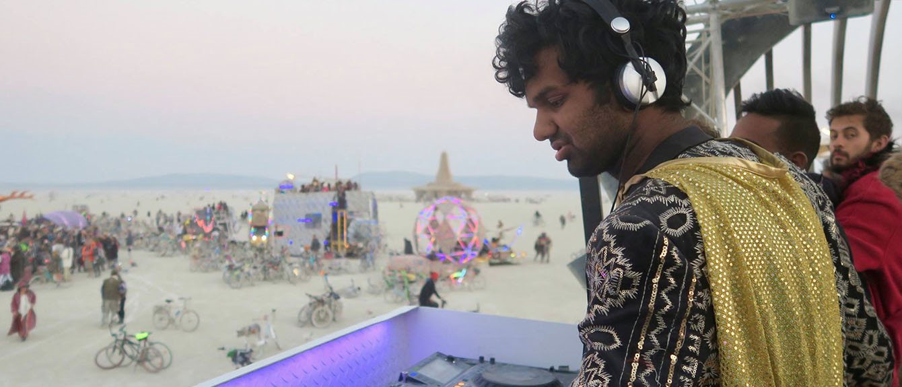
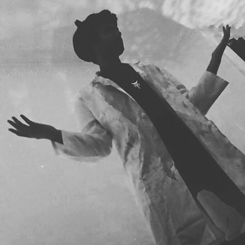
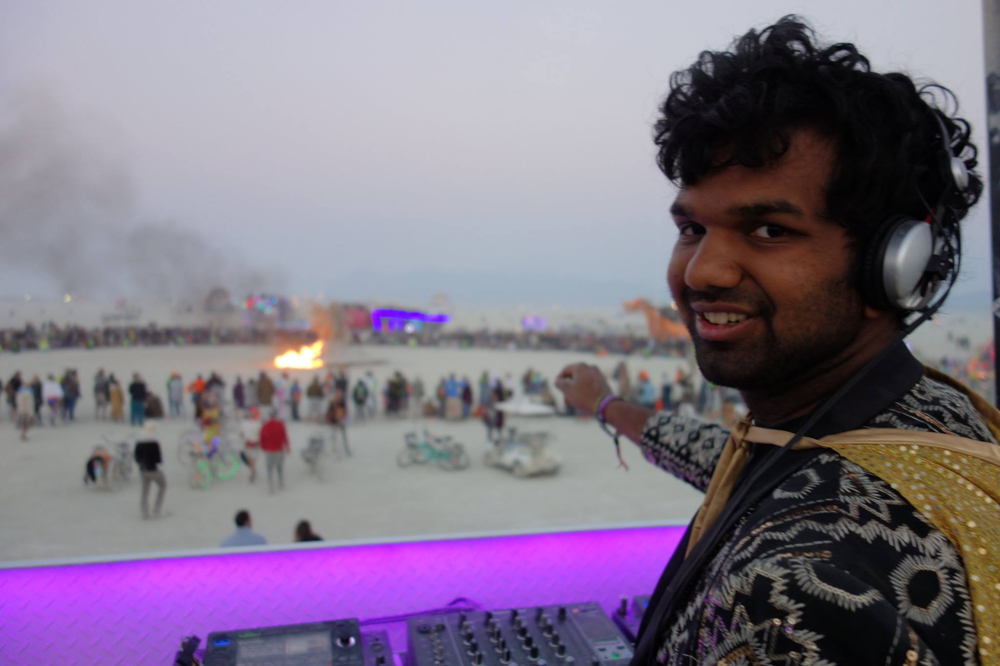
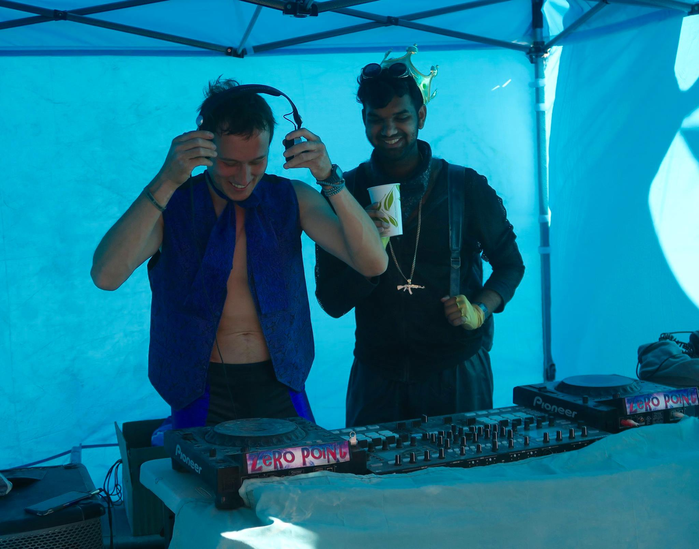
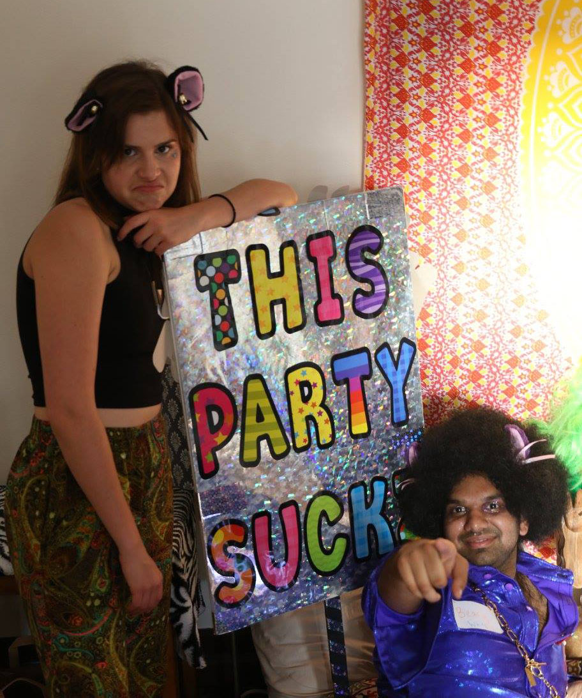

who is shri

shri, hailing from San Francisco, takes his listeners on a musical journey, skillfully curating
avant-garde and eclectic tracks spanning deep, tribal, progressive, techno, and disco.

shri's avant-garde and eclectic style is very much representative of his home, San Francisco.
Getting his start with renegade sunrises, his sound is bright, uplifting, and eclectic relative to what you'd hear on a normal club night.
shri likes to play music that spans genres.
In any given set, his listeners are taken on a journey through his broad sonic palette.
His deep appreciation for psychedelic rock stems from childhood memories of listening to Pink Floyd.
His love for Asian and African drums and instruments are inspired by his ancestry.
His fondness for weird voices and sounds are a reflection of his eclecticness.
You can find shri playing sets in a variety of places: festivals like Burning Man,
his own renegades inside and outside of his hometown San Francisco,
epic venues like the Icelandic Freight Ship he played an impromptu 6-hour long set (so the music wouldn't stop),
or his favorite underground parties (Mioli!) and music clubs (Public Works, Monarch, The End Up, Hawthorne, Harlot).

shri's love of the music scene doesn't just stop at the decks.
He takes pride in throwing events that stretch the imagination and open the eyes and hearts of his attendees,
whether it be free sunrise parties in scenic SF locations
or festivals which he organizes with a couple of local friends.

The love and creative energy shri puts into his events coupled with the unique sonic journey
he takes his listeners on are what make for the super special magic that happens at a shri party.

Some of shri's biggest influences are Jennifer Cardini, Acid Pauli, Adana Twins, Dixon, Seth Troxler, and Rebolledo.